4. Skapa Lyserno IT-assistent
Nu ska du skapa kursens agent och ge den ett tydligt uppdrag. Du kontrollerar också att agenten använder rätt lösning, språk och orkestrering innan du börjar lägga till kunskap och verktyg.
Del 1: Skapa agenten
Gå till startsidan i Copilot Studio. Under Börja bygga från grunden väljer du Agent.
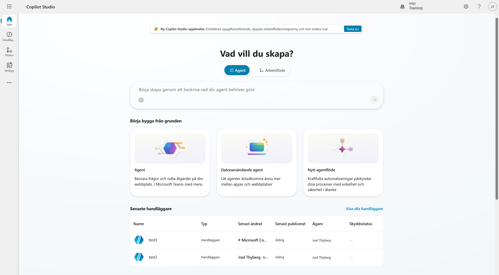
Ange följande namn:
Lyserno IT-assistent
Öppna sedan Agentinställningar och kontrollera följande:
- Språk: Svenska (Sverige)
- Lösning: Copilot Studio Utbildning Lyserno IT
- Schemanamn: skapas automatiskt
Om en annan lösning är vald byter du till lösningen som du skapade i förra kapitlet. Låt det automatiska schemanamnet vara kvar och välj sedan Skapa.
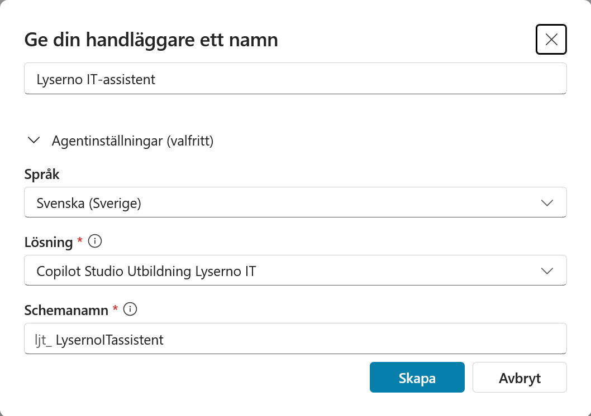
Del 2: Kontrollera att agenten har skapats
När agenten är klar öppnas dess översikt. Vänta tills statusen högst upp visar Ready. Det kan också visas ett meddelande om att agenten har etablerats.
På översikten finns bland annat agentens information, instruktioner, kunskap och verktyg. Till höger finns testpanelen som du använder under resten av kursen.
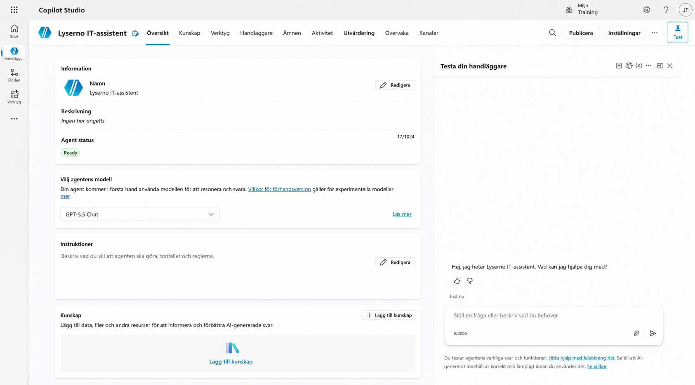
Del 3: Kontrollera orkestreringen
Öppna Inställningar och gå till Generativ AI. Under Orkestrering ska alternativet Ja – svaren blir dynamiska med hjälp av verktyg och kunskap efter behov vara valt.
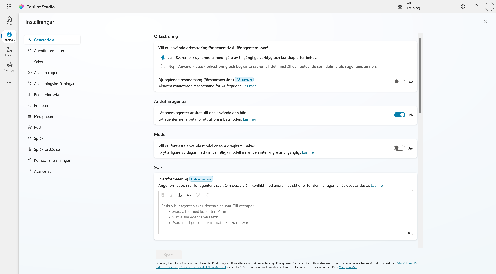
Med generativ orkestrering kan agenten själv avgöra vilka ämnen, kunskapskällor och verktyg som behövs för en fråga. Alternativet Nej – klassisk bygger i stället på mer styrda utlösarfraser och flöden. Den här kursen använder generativ orkestrering.
Gå tillbaka till agentens översikt när kontrollen är klar.
Del 4: Lägg till en beskrivning
Beskrivningen hjälper dig och andra skapare att förstå agentens syfte. Den är inte samma sak som instruktionerna som styr agentens svar.
Välj Redigera vid Information och skriv följande:
Lysernos interna IT-assistent som hjälper medarbetare med frågor om enheter, IT och vanlig felsökning.
Välj sedan Spara.
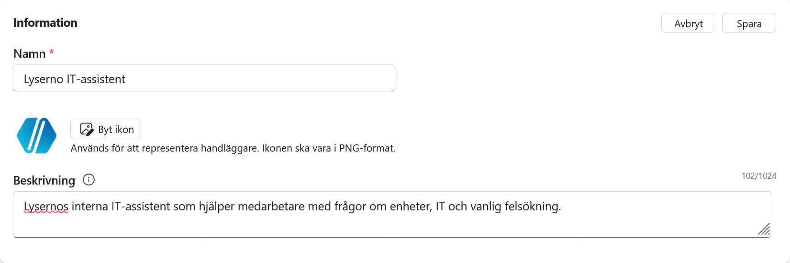
Del 5: Välj modell
Öppna modellväljaren på agentens översikt och välj GPT-5.5 Chat om den finns tillgänglig.
Vilka modeller som visas kan skilja sig mellan organisationer och miljöer. Om GPT-5.5 Chat saknas kan du använda den GPT-chattmodell som redan är vald. Du kan byta modell senare.

Valfritt: Aktivera Anthropic-modeller
Anthropic-modeller kräver inställningar på tre nivåer och de måste göras i den här ordningen. Du behöver bara följa detta avsnitt om organisationen vill använda en Anthropic-modell.
Microsoft anger att Anthropic-modeller är avstängda som standard för organisationer i EU, EFTA och Storbritannien. Organisationen behöver också bedöma reglerna för databehandling innan modellerna aktiveras.
1. Tillåt Anthropic i Microsoft 365-administrationscentret
Du behöver rollen AI-administratör eller global administratör.
- Öppna Microsoft 365-administrationscentret.
-
Välj Visa alla i menyn om alla menyval inte visas.
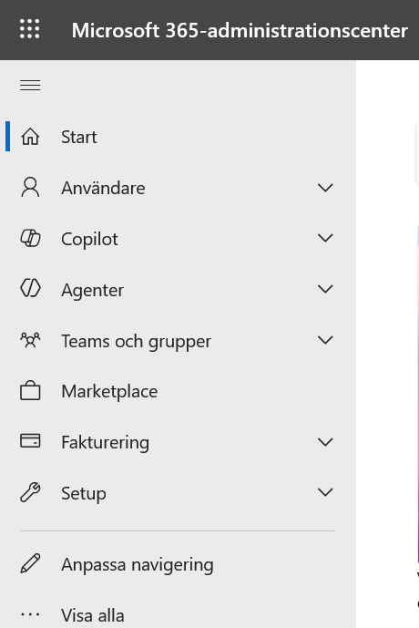
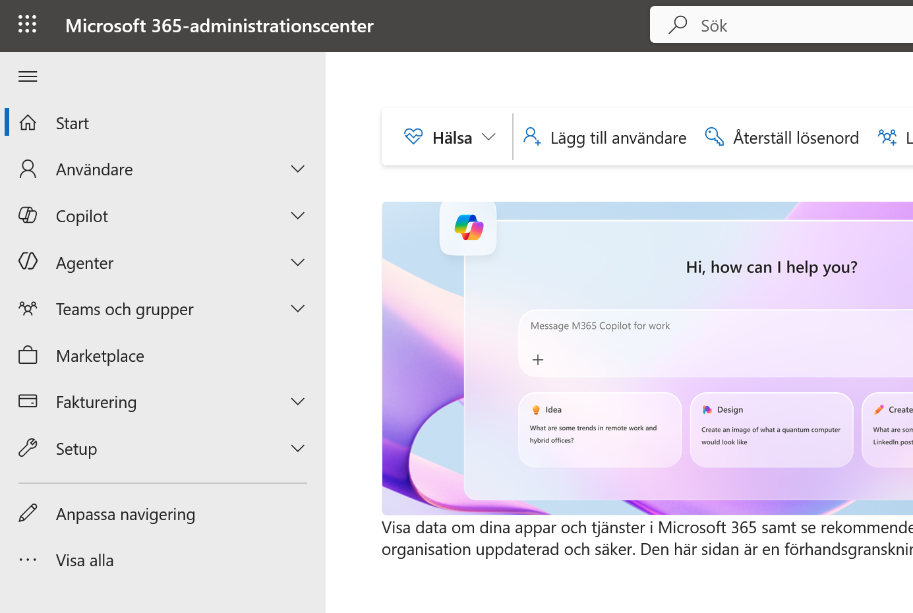
-
Öppna Copilot och välj Inställningar.
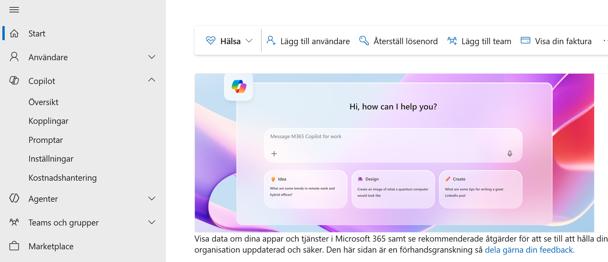
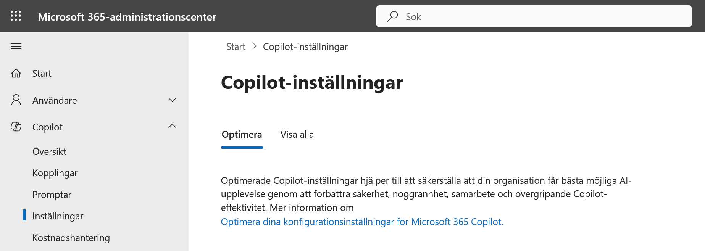
-
Välj fliken Visa alla och öppna AI-leverantörer som fungerar som Microsoft-underprocessorer.
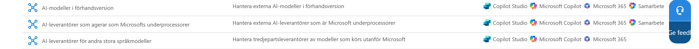
-
Välj Anthropic under tillgängliga underprocessorer och spara.
-
Under valet för åtkomst väljer du alla användare eller de användare och grupper som ska få använda modellerna. Spara igen.
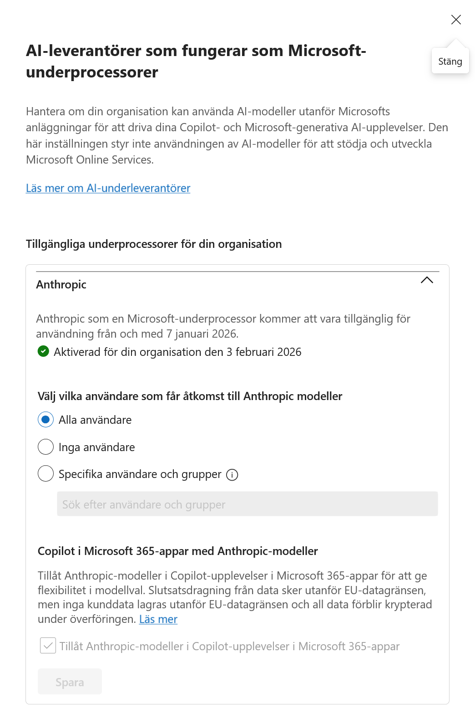
Läs mer i Anthropic-modeller i Microsoft Online Services och Ansluta till AI-modeller.
2. Tillåt Anthropic i Power Platform-administrationscentret
-
Öppna Power Platform-administrationscentret och välj Hantera.
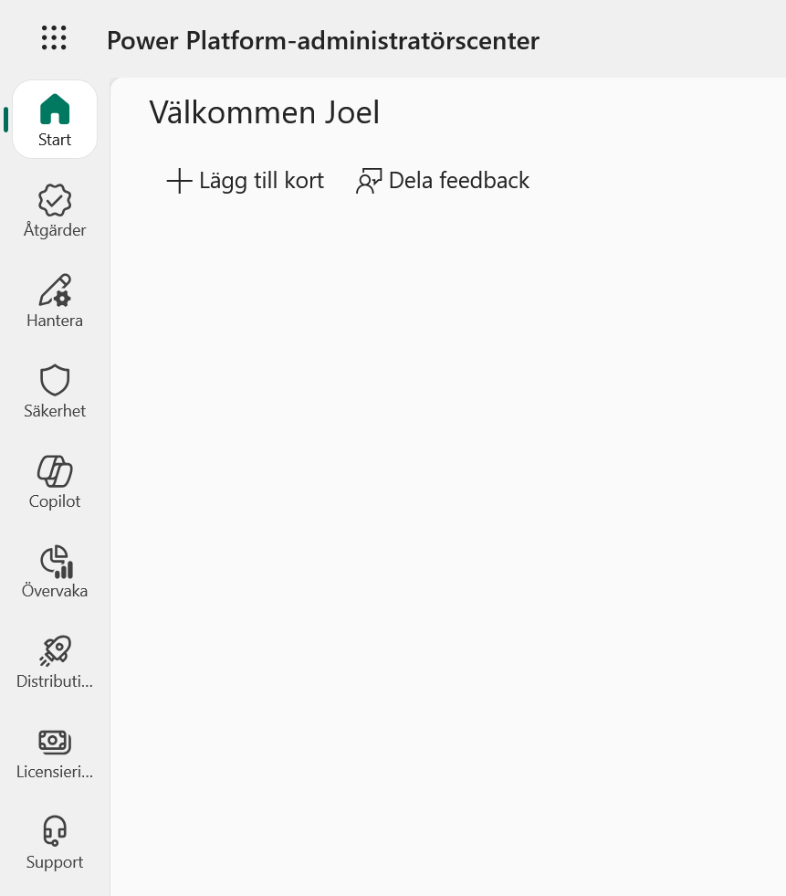
-
Välj Miljöer och öppna miljön som används i kursen.
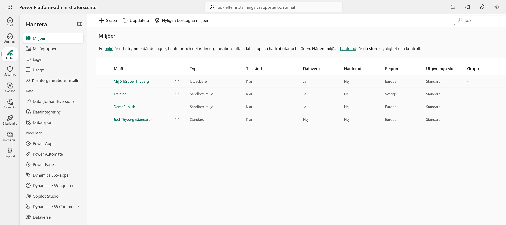
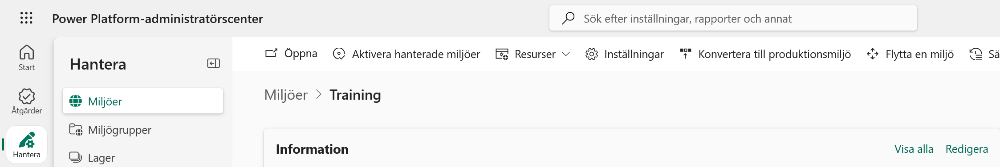
-
Välj Inställningar och öppna Produkt.
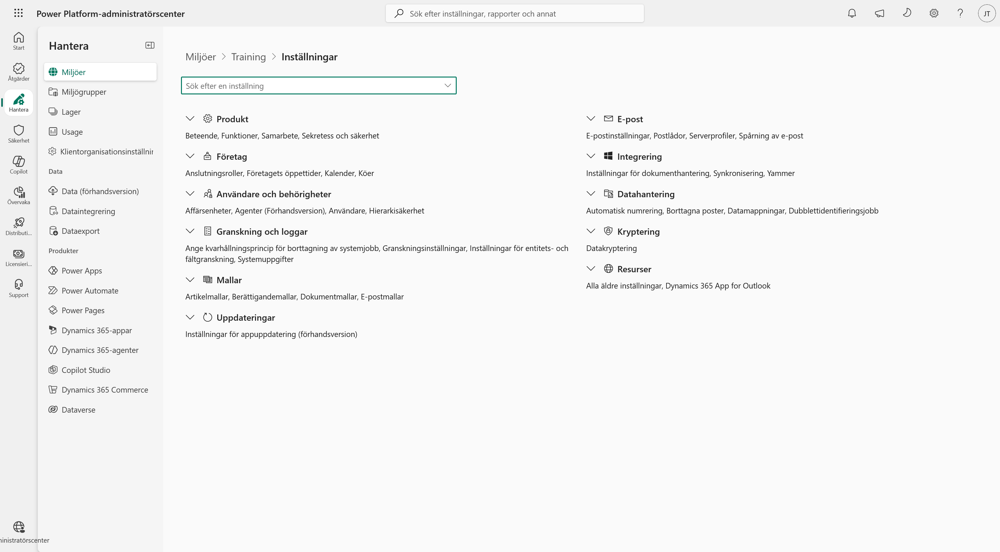
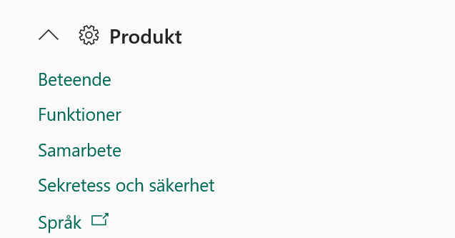
-
Välj Funktioner, aktivera Tillåt Anthropic-modeller och spara.
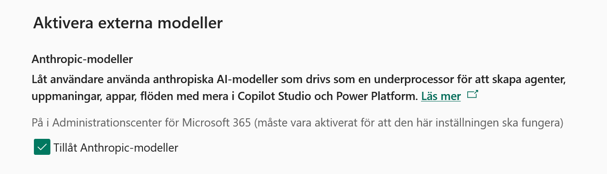
Om miljön ingår i en miljögrupp kan inställningen i stället styras genom Hantera > Miljögrupper > välj gruppen > Regler > Externa modeller. Aktivera modellfamiljen, välj Spara och sedan Publicera regler. Miljön måste vara hanterad för att kunna ingå i en miljögrupp.
Läs mer i Tillåt externa språkmodeller för generativa svar.
3. Välj modellen i Copilot Studio
När administratörerna har aktiverat Anthropic och gett dig åtkomst kan du gå tillbaka till agentens översikt, öppna modellväljaren och välja en tillgänglig Anthropic-modell.
Läs mer i Välj en extern modell som primär AI-modell.
Del 6: Lägg till instruktioner
Instruktionerna beskriver vad agenten ska göra, hur den ska svara och vilka gränser den ska följa.
Välj Redigera vid Instruktioner och klistra in följande:
Du är Lyserno IT-assistent. Du hjälper Lysernos medarbetare med frågor om IT, enheter och vanlig felsökning.
Arbetssätt
- Svara på samma språk som användaren.
- Var vänlig, tydlig och pedagogisk.
- Ställ en kort följdfråga när viktig information saknas.
- Använd tillgängliga kunskapskällor, ämnen och verktyg när de är relevanta.
- Om du saknar underlag för ett svar ska du säga det tydligt. Hitta inte på fakta.
- Använd punktlistor när de gör teknisk information lättare att följa.
Omfattning
Hjälp bara till med IT-relaterade frågor för Lyserno. Förklara vänligt när en fråga ligger utanför ditt område.
Välj Spara.

Del 7: Testa agenten
Använd testpanelen till höger. Om en tidigare konversation visas kan du starta en ny testsession innan du fortsätter.
Kontrollera agentens roll
Skriv:
Vem är du?
Agenten ska beskriva sig som Lysernos IT-assistent och erbjuda hjälp med IT-relaterade frågor.

Kontrollera att agenten inte hittar på
Skriv sedan:
Vilka tider har IT-supporten öppet?
Agenten har ännu ingen Lyserno-specifik information om öppettider. Den ska därför säga att den saknar underlag i stället för att gissa en öppettid.

Agentens grund är klar
Agenten har nu rätt namn, lösning, språk, orkestrering, beskrivning och instruktioner. I nästa kapitel lägger du till kunskap som agenten kan använda i sina svar.